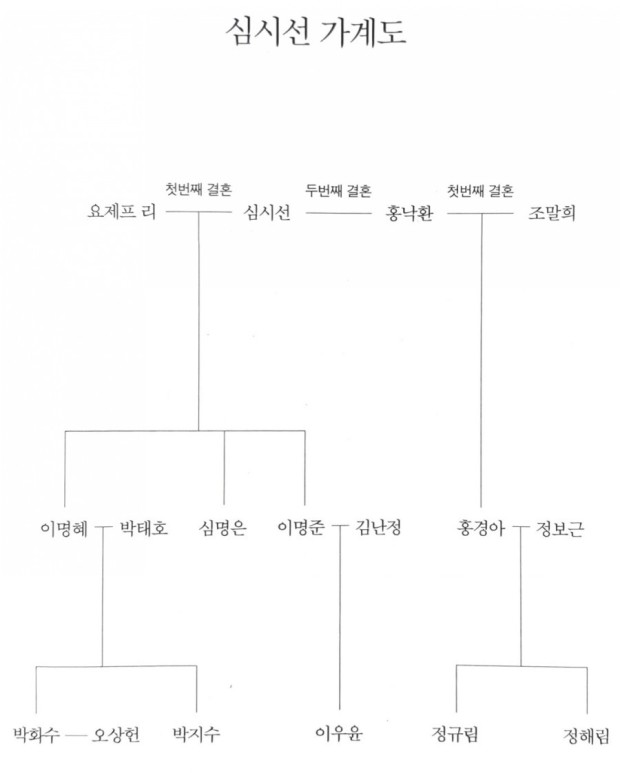

한국과 미국에 나뉘어 살고 있는 한 가족이 단 한 번뿐인 제사를 지내기 위해
하와이로 떠난다는 다소 엉뚱한 상황에서 출발하는 <시선으로부터,>는, 현대사의 비극과
이 시대 여성에게 가해지는 폭력, 세계의 부조리를 관통하며 나아간다.
미술가이자 작가이며 시대를 앞서간 어른이었던 심시선.
그녀가 두 번의 결혼으로 만들어낸 이 독특한 가계의 구성원들은 하와이에서 그녀를 기리며
각자 자신만의 방식으로 성장해나간다.
시선으로부터, 가계도

그러니 여러분, 앞으로의 이십 년을 버텨내세요.
쉬운 일은 아닐 테지만 모퉁이가 찾아오면 과감히 회전하세요. 매일 그리되 관절을 아끼세요.
아, 지금 그 말에 웃는 사람이 있고 심각해지는 사람이 있군요.
벌써 관절이 시큰거리는 사람도 많지요?
관절은 타고나는 부분이 커서 막 써도 평생 쓰는 경우가 있고 아껴 써도 남아나지 않는 경우가 있어 불공평합니다.
하지만 어쩌겠습니까? 모든 면에서 닳아 없어지지 마십시오.
/p.229